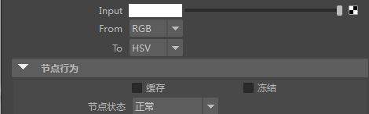
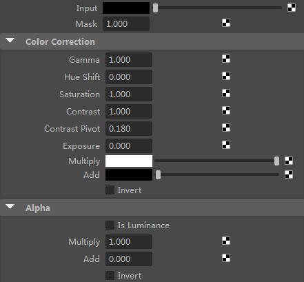
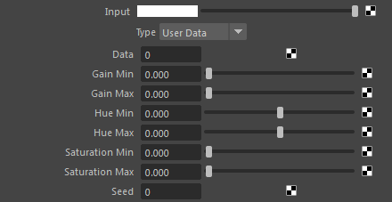
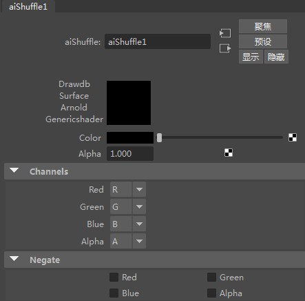

| 延伸阅读 |
|---|
| 有关完整的着色器文档，请参见《Arnold 用户手册》中的着色。 |
下面是 MtoA 中可用的颜色校正节点。
color_convert 节点可用于将输入颜色从下列一种颜色空间转化为另一种颜色空间：RGB 和 HSV。

color_correct 节点可用于调整图像的 Gamma、色调、饱和度、对比度和曝光。使用以下运算符更改“输入”(Input)颜色，按照与参数相同的顺序应用。

借助 color_jitter 着色器，您可以通过应用随机颜色变化来更改输入颜色。对于以下每个参数，您可以指定随机颜色的色调、饱和度和增益 (HSV) 范围。种子用于获取不同的随机变化。

默认情况下，通过合并 RGB 和 Alpha 输入来输出 RGBA。此外，提供了参数来改变通道，您可以选择 R,G,B,A 输入通道与 R,G,B,A 输出通道的对应关系；还提供了参数对颜色求反。如果法线或向量置换贴图具有不同的通道约定，那么这个节点可能会很有帮助。
